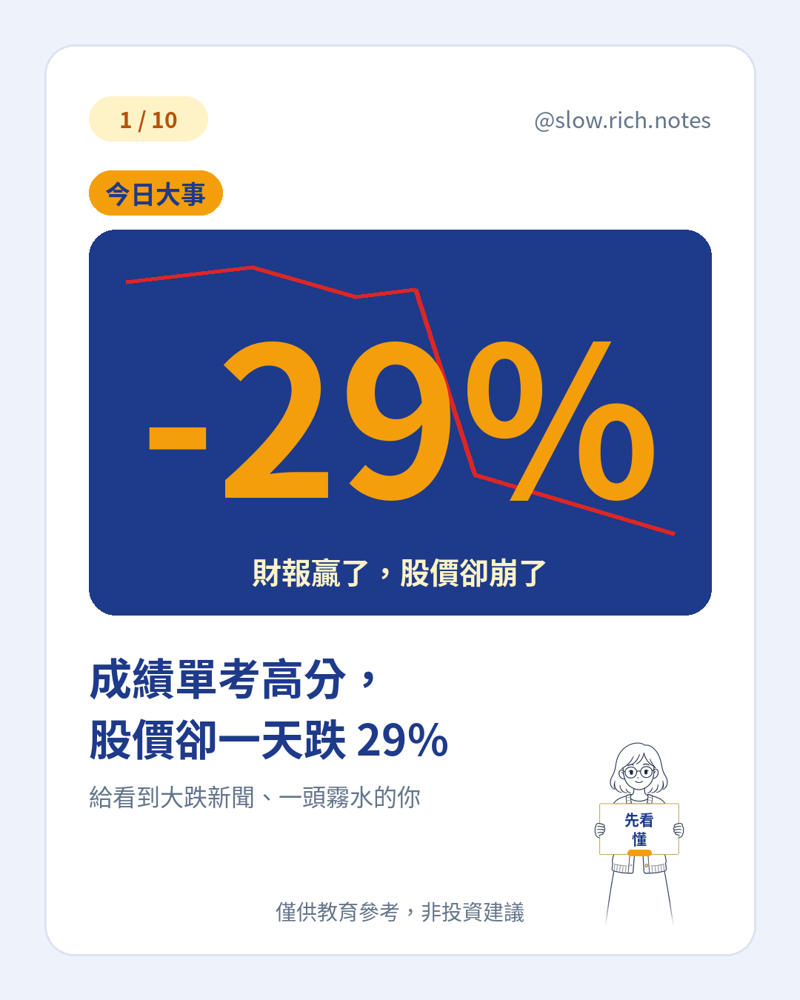

你可能也看到這則新聞：10/30（美東）英特爾股價一天跌了約 29%，報導稱是 40 多年來最大的單日跌幅。同一天費半跌約 7.2%，台指期夜盤也跌了約 867 點。第一次看到這種數字，很難不心慌。
但更讓人困惑的是：英特爾上一季的成績其實不差。調整後每股盈餘（EPS）約 0.52 美元，比市場預期的約 0.40 美元還好；營收約 165 億美元，也略優於預期。成績單考高分，股價為什麼反而大跌？答案藏在一個新手常忽略的名詞：「財測」。
先把兩個詞分開。財報是過去的成績單，告訴你上一季賺了多少、賣了多少，已經發生、改不了。財測（guidance）則是公司自己對未來的預告，例如「下一季營收大概落在多少」。很多公司會在法說會上一起公布這兩樣東西，而市場往往更在意後者。
這次英特爾給的下一季營收財測約 150～160 億美元、EPS 約 0.25 美元；但市場原本期待的是營收約 170 億美元、EPS 約 0.43 美元上下。報導指出主因是 PC 需求轉弱。差距一攤開，股價就開始重新定價。
關鍵觀念是：股價看的是未來，不是過去。大家對公司的期待，早就反映在價格裡了。當「實際預告」低於「原本期待」，就算過去成績再漂亮，價格也可能往下修正。這也是為什麼看新聞時，除了財報數字，還要看財經新聞常見名詞裡的「預期」與「財測」。
面對這種單日大跌，新手只要記得三件事：第一，不因單日新聞追高殺低；第二，不猜底；第三，先看懂「財報、財測、預期」三者的差別就夠了。市場短期的劇烈波動很常見，想了解跌多少算回檔、修正還是熊市，可以再看那篇；也可以順便對照新手最常犯的 5 個錯誤，提醒自己別被新聞牽著走。
看懂名詞，就少一次被新聞嚇到。如果你剛開始接觸投資，可以先免費領取《投資新手入門清單》，一步一步把基本功打穩。
※ 本文僅供教育參考，非投資建議；文中數字皆為約數，以公司官方公告與正式報導為準。